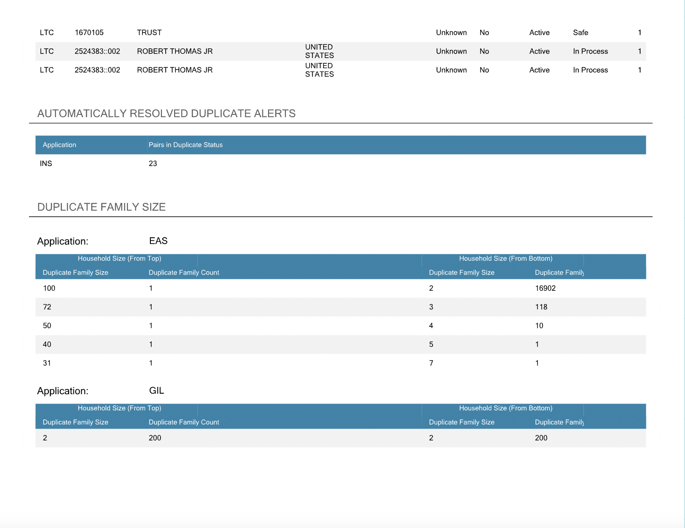

OVERVIEW:
Premium Reports serve as an indispensable tool for Professional Services, facilitating meticulous data analysis. This platform offers two pivotal features: firstly, it empowers clients with insights into instances where their records undergo segmentation, ensuring transparency in the process; secondly, it adeptly identifies pairs of records tagged as duplicates, enhancing data integrity. Despite the evident value proposition, the current adoption of Premium Reports remains somewhat limited within the client base.
In my capacity as a UX Intern, my primary objective revolves around a comprehensive exploration of Premium Reports. This entails delving into its intricacies to discern underlying issues and hurdles. By synthesizing a profound understanding of user pain points and aspirations, I aim to orchestrate a refinement of the user interface. This endeavor is driven by the aspiration to elevate the product's utility quotient and subsequently cater to our clients in a more impactful manner.
Duration:
May 2022 - August 2022
Client:
Innovative System's FinScan Premium Clients
Team:
Self
My Role:
User Research, Interaction, Visual design, Prototyping & Testing
Founded in 1968, Innovative Systems is a pioneering technology company renowned for its groundbreaking solutions in data quality. With an unwavering focus on innovation, the company has consistently delivered cutting-edge products and services that address complex challenges faced by businesses. Their commitment to staying ahead of the technological curve is evident in their portfolio of empowering, protecting, and scaling compliance solutions. Backed by a team of experts, Innovative Systems embodies a culture of excellence, providing clients with the tools they need to thrive in today's dynamic digital landscape.
Upon joining Innovative Systems, I was hired as the UX/UI design intern in a dynamic company comprising 200 engineers and 7 product designers. In my capacity as the UX Intern, my principal objective revolves around delving into the intricacies of Premium reports. Through this exploration, my aim is to comprehensively discern the prevailing issues and challenges while concurrently enhancing the user interface. By doing so, I endeavor to elevate the product's utility and value proposition for our esteemed clients.
Reflecting on the past year, I take pride in the notable strides I've taken. Some of the key accomplishments include:
- Implementation of a Streamlined Design Process: I spearheaded the establishment of a well-defined design process. This initiative has instilled a heightened sense of organization in our workflow, offering not only internal benefits but also granting other teams insight into our forthcoming sprints.
- Enhanced Usability Across the Platform: Recognizing the significance of a user-centered approach, we have since been diligently conducting UX research and usability tests across all our projects, leading to enhanced user satisfaction.
- Crafting a Comprehensive Design Kit: By creating a meticulous design kit, we have effectively nurtured consistency in the visual and experiential aspects across distinct sections of the platform. This step has contributed to a cohesive user journey and branding alignment.
- Establishment of a Design System: The inception of a robust design system has proven instrumental in fostering understanding among Engineering and Product teams regarding the rationale behind our choice of components. This shared comprehension leads to more informed decisions during implementation.
My journey within Innovative Systems has been one of growth and innovation. The strides made in terms of refined processes, heightened usability, and strategic design implementation have all contributed to a more holistic and impactful user experience ecosystem.
The process
Our process on FinScan Premium Reports is based on on a crafted UX Process timeline that is similar to the Lean UX Process. We aim to incorporate the key phases of Research, Empathize, Ideate, Test, and Develop.
Understanding the problem
Before joining Innovative Systems, there were mockups created for the Reports page but no usability test were conducted which was ineffective in determining whether the users experiences were improved or not. I conducted research interviews with primary clients and account managers to uncover pain points that they were experiencing with the existing reports.
In the scope of my user research, I followed these criterion:
- Understand the user goals and needs
- Identify challenges within the current user journey
- Assess task effectiveness through established task metrics
The main issue with Premium Reports is their lack of valuable information for users. Users find the report layout cramped and some sections misleading. Notably, under cleanse and deduplication results, original records before segmentation aren't shown, and parent records of duplicates aren't identified. This missing context diminishes the value and utility of Premium Reports, failing to meet user goals effectively. Addressing these gaps through improved content presentation and contextual information will enhance the report's value and user experience.
Understanding the existing product:
Brainstorming possible solutions:
Conducting content audit
Content inventory is a result of cataloging a product's whole content in an easy-to-access manner. Creating this table allows us to better understand what types of pages and content are being created and how it is organized. This is a great method to determine the quality of content on Premium Reports and whether it needs to be updated or removed.

Gathering insights
After conducting user interviews with clients, I proceeded to engage in the process of affinity mapping alongside my colleague. This endeavor was aimed at the amalgamation of the identified pain points, wherein we meticulously categorized these challenges based on common themes and pertinent features within the product.
I embraced a methodology firmly rooted in data-driven insights, specifically harnessing the potency of the severity framework, to not only inform my procedural course but also to categorize usability concerns in an order of importance. This framework plays a pivotal role in discerning the degree of severity associated with each usability challenge, a computation contingent on the amalgamation of three variables:
Severity = Task Criticality (TC) × Impact (I) × Frequency (F)
- Task Criticality (TC) - A measure of the task's significance to the user, gauged on a scale of 1 to 5, where 1 indicates low importance and 5 denotes critical significance.
- Impact (I) - The magnitude of influence exerted by the issue on the user's task accomplishment, graded on a scale from 1, indicating a mere suggestion, to 5, signifying an impediment of monumental proportions.
- Frequency (F) - The occurrence frequency, expressed as a percentage, determined by the issue's prevalence across the entire participant pool.
Narrowing down the scope of work
Based on the user interviews conducted with 6 user on the existing Premium Reports, we found the following key issues:
- 66% of users found the current reports's data to be very cluttered, making it overwhelming to look at and harder to understand
- 50% were frustrated when scanning through whether a duplicate was a parent or single from cleanse and duplicate results
- 83% of users found that it would be easier and more convenient to have a filter system to generate reports based on their desired fields



Wireframing the solution
In response to the problems identified through user research, we attempted to alleviate these user concerns by formulating potential solutions:
- Devising a configuration interface that empowers users to generate tailor-made reports aligning with their specific data requisites.
- Imposing a more distinct visual hierarchy, achieved through the consolidation of related fields, to enhance overall clarity.
- Streamlining the user journey by curtailing the number of steps required, thereby minimizing time investment for task completion.
- Concentrating efforts on essential data fields while eliminating extraneous elements that lack relevance.
I quickly mocked up some wireframes to gather feedback from stakeholders encompassing Product, Engineering, and users on the holistic arrangement and layout of the Reports page. This includes developing a uniform visual hierarchy and layout paradigm for the Reports component.
Validating the design
I conducted a series of targeted usability testing sessions with our users, aiming to affirm the efficacy of the design concepts in resolving their identified issues. A carefully crafted script was created, encompassing a scenario that prompted users to generate a new Report showcasing exclusively the Cleanse and Deduplication Results.
Throughout these sessions, I observed the users' engagement with the prototype, deciphering their interactions and behaviors. The results of these usability sessions unveiled a pivotal insight: user empowerment over the creation of Reports, tailored to their specific data field preferences, considerably alleviates the overall process, underscoring the significance of user-driven control.
Developing the designs
I created my high fidelity mockups in Figma and Miro then imported them into Invision to allow the software engineers to inspect the file and export the HTML/CSS code.
I also worked witht he Front End team to make sure there weren't any features or interactions in the design that weren't covered in the mockups. I conducted a UX review of each task that needs to be completed in the prototype and created a video showcasing how the new Reports look like when generated by clients.
Results and takeaways
Sine the implementation of the new redesign of Premium Reports, there is a decrease in the number of complaints. Additionally, users are happy about the configuration screen, praising on how useful it is when looking for specific applications and type of cleanse/duplicate results. Clients spoke highly about how organized the data fields are and how it saves them a large proportion of their time.
Some key takeaways from this project are:
- Create a plan to launch an MVP.This serves a dual purpose: firstly, in effectively addressing extraneous demands that possess the capacity to deviate the project from its intended course; and secondly, in ensuring the timely delivery of a product of exceptional caliber.
- Usability Testing doesn't end after developmentDesign embodies an ongoing cycle of refining the user experience, a perpetual endeavor aimed at enhancement. Always find ways to father and listen to user's feedback on the product whether it's in the process of being created or already created. There are always opportunities to make the user experience better.
- Always involve front and back end teams This helps reduce any work that needs to be put in later when there is a technical error in missing a important feature or interaction in the mockup screens. Working closely with these teams help everyone better envision and understand the product on the same level and improve efficiency